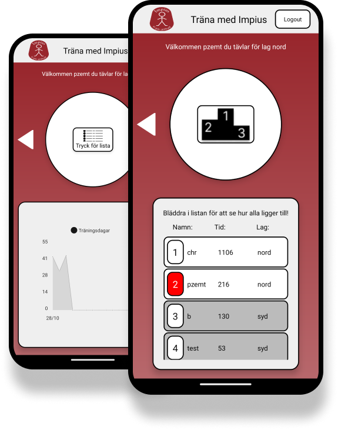
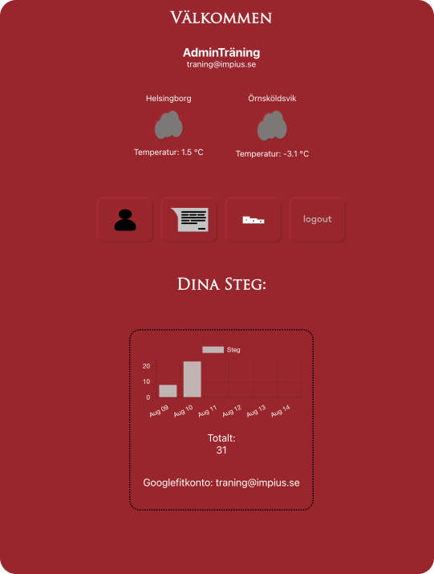

Impius träningsapp
Impius ville ha en enkel träningsapp under ett event där
användarna snabbt kunde föra in antal minuter och sedan jämföra
med varandra på en prispall. Förutom att följa individuell
prestation så skulle även de olika filialernas perstation följas.
Appen har under två olika event på ca 2 månader haft över 80
användare tillsammans på både android och ios.
Till detta projekt använde jag mig av Django som backend på en AWS
server. React.native användes som lösning för att med samma kod
kunna få ut en app till både android och ios.

Impius stegräknarapp
Mitt andra mobilappsprojekt är en stegräknar app. Även denna app
är tänkt att användas av Impius personal. Här är det stegen som
skall räknas i en 2 månaders period och skall som föregående app
spara både individuell och lag prestation. Här har jag även lagt
till en meddelande funktion och använder mig av SMHIs väder api
för att få fram prommenad vädret
Här använde jag jag mig av firebase som backend och react.js för
att göra en webbaserad mobilapp som kan läggas till på telefonens
hemskärm.
